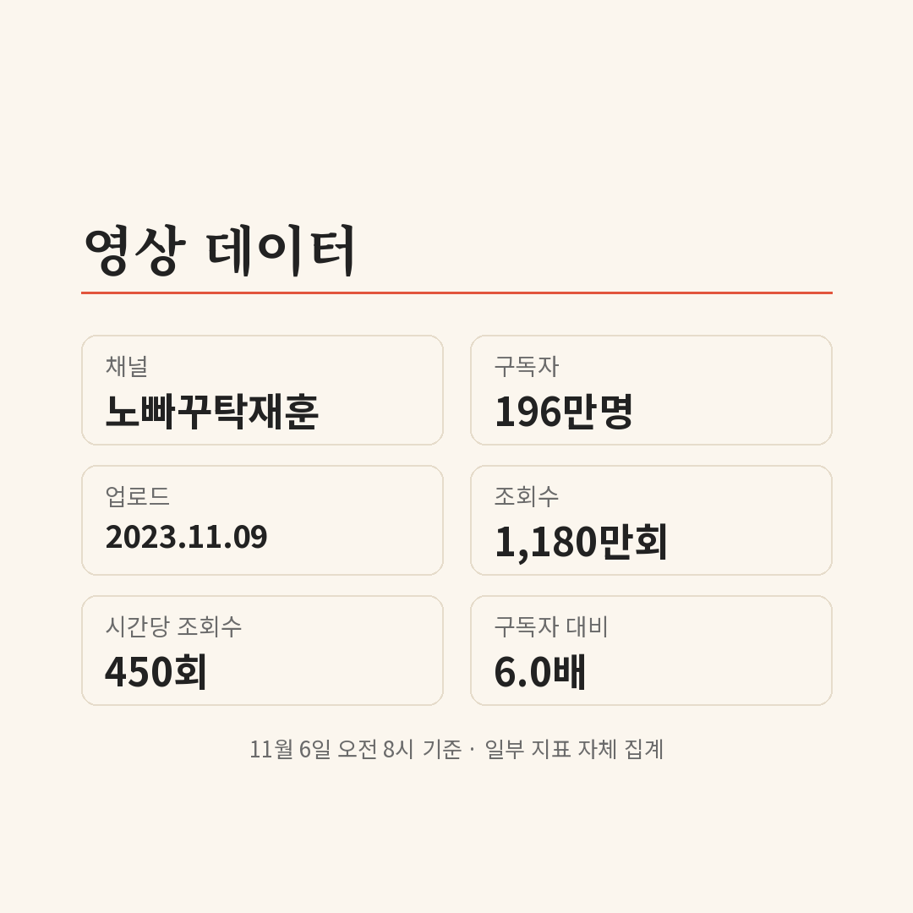

이효리가 나온 편 하나가 1,180만 회. 구독자 196만 명인 웹예능 채널 '노빠꾸 탁재훈'에서 가장 많이 본 영상이에요. 요즘 쇼츠 피드에 탁재훈 장면이 자주 보였다면, 원본이 어디고 무엇부터 보면 되는지 이 글에서 정리했어요.
📷 사진 1 자리
쇼츠 속 탁재훈, 원본은 어느 채널일까
10월 29일부터 11월 3일 사이 다른 채널에 올라온 탁재훈 쇼츠 가운데 세 편이 각각 163만~268만 회를 기록했어요. 이엘과 김경란이 나오는 장면이 그중 둘이고, 이엘 쇼츠 설명에는 풀영상을 노빠꾸 탁재훈에서 보라고 적혀 있어요.
원조 채널도 같은 시기에 짧은 영상을 올렸어요. 10월 29일 공개된 '스펀지 식 문제 출제'는 186만 회. 김경란·아나운서·스펀지 태그가 붙은 김경란 편 쇼츠이고, 자체 집계로 시간당 1만 회씩 늘었어요.
▶ 영상 1 자리
10월 말 김경란, 11월 초 바비킴
가장 최근 화제 회차는 김경란 편이에요. 10월 29일 여러 매체가 김경란이 탁재훈에게 너무 도도하다며 "날 상대하기 싫나" 하고 직접 따졌다고 전했어요.
11월 4일에는 바비킴 편 소식이 나왔어요. 바비킴은 한 살 딸의 분유값을 벌려고 유튜브를 시작했다고 말했죠. 다른 채널에도 바비킴 편 쇼츠가 11월 5일부터 올라오기 시작했어요.
1천만 회를 넘긴 두 게스트, 이효리와 김예원
원조 채널 영상 중 1천만 회를 넘긴 건 두 편뿐이에요. 2023년 11월 시즌2 77회 이효리 편(1,180만 회)과 같은 해 5월 50회 김예원 편(1,085만 회)이에요.
이효리 편은 자체 집계로 구독자 수의 6.0배가 봤어요. 상위 댓글 100개 중 39개에 '이효리'가 들어갔고 '티키타카'(7개)와 '순발력'(6개)도 자주 나왔어요.
▶ 영상 2 자리
김예원 편 상위 댓글 100개에서는 '타격감'(13개)과 '리액션'(11개)이 많이 보였어요. 김예원은 게스트로 나온 이듬해인 2024년 7월, 스핀오프 '탁스패치' 영상 제목에 탁재훈·신규진과 나란히 이름이 올라 있어요.
▶ 영상 3 자리
다음으로 볼 만한 편
세 번째로 많이 본 영상은 일타강사 이지영 편(818만 회, 시즌2 28회)이에요. 그다음은 SNL에서 얼굴을 알린 지예은 편(619만 회, 시즌2 72회)이고요.
▶ 영상 4 자리
영어 자막이 필요한 사람과 함께 본다면 츄 편(324만 회, 시즌2 107회)이 있어요. 제목에 [ENG] 표시가 붙은 회차예요. 이 밖에 면접 형식의 스핀오프 '탁재훈의 압박면접'도 같은 채널에 있어요.
▶ 영상 5 자리
쇼츠로만 보던 장면의 원본이 대부분 한 채널에 모여 있다는 점이 정리하면서 가장 쓸모 있었던 부분이에요. 처음이라면 조회수 1위인 이효리 편보다, 댓글에서 '타격감'과 '리액션'이 많이 언급된 김예원 편부터 보는 게 이 채널의 색을 알기 좋아 보여요.
쇼츠로 본 탁재훈 장면의 원본은 대부분 유튜브 채널 '노빠꾸 탁재훈'에 있어요. 올해 1월 영상 설명 기준으로 새 영상은 매주 수요일 오후 6시에 올라와요.
